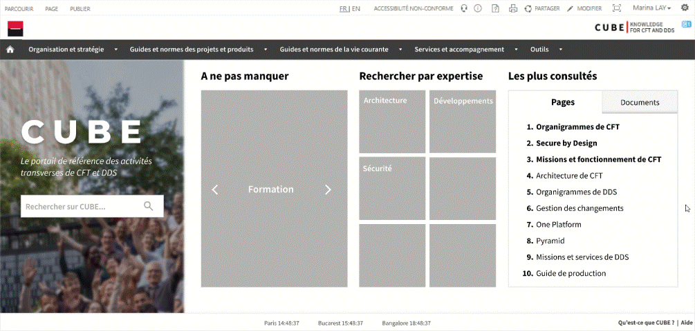
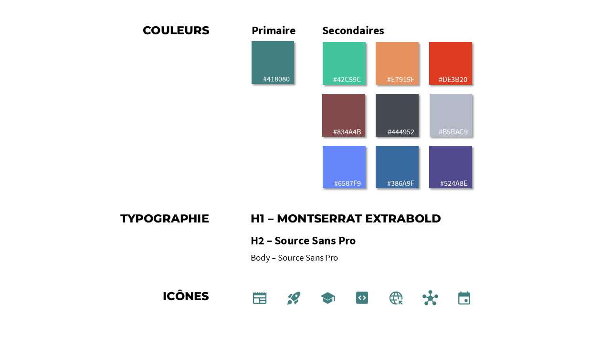
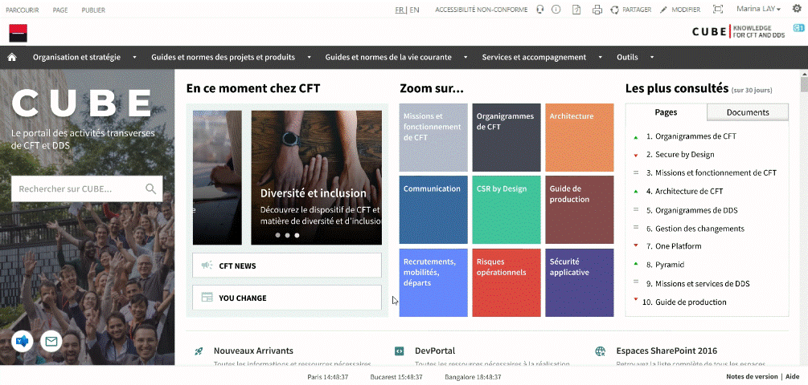

CUBE
Designing a showcase homepage for one of Société Générale’s IT directions.
Time frame: February - July 2023
Tools: Figma
Team: Boris Durupt-Zhou, Camille Kui
CUBE est le portail de gestion des connaissances de CFT (Corporate Functions Technologies), l’une des directions IT de Société Générale. Son objectif est d’identifier et synthétiser toute information nécessaire à l’ensemble des collaborateurs de CFT, et de les centraliser afin de faciliter la recherche d’information.
Dans un objectif d’amélioration continue de la plate-forme, plusieurs chantiers UX sont menés chaque année sur CUBE. Lors de l’un de ces précédents chantiers, des utilisateurs nous avaient fait les retours spontanés suivants au sujet de la page d’accueil :
💠“Je trouve la page d’accueil vachement vide. Ça m’attire pas le fond blanc avec du texte dessus, ça me parle pas.”
💠“Mon premier ressenti c’est que c’est plutôt froid. Il manque d’éléments dynamiques.”
💠“Je me demande s’il n’y a pas moyen visuellement de faire quelque chose sur la page d’accueil. On a l’impression que c’est la plus vide et la plus simple de tout le site.”
💠“Quand j’arrive sur la page d’accueil, j’ai l’impression que c’est mort.”
Une refonte de la page d’accueil était donc jugée nécessaire, avec plusieurs enjeux à la clé :
Enjeux du chantier
- 👉 Donner une meilleure impression de CUBE aux visiteurs.
- 👉 Améliorer l’attractivité de CFT.
- 👉 Renforcer le positionnement de CUBE en tant que vitrine interne pour CFT.
🔍
Empathize
What do the users need and want?
User Interviews
Pour la phase de recherche préliminaire, nous avons organisé une série d’interviews avec nos utilisateurs cible afin d’identifier les irritants et les évolutions à apporter à la page d’accueil de CUBE.
Modalités
- 🎙️ Interviews individuels
- 👥 44 utilisateurs, sur une période de 2 semaines et demie
- ⏱️ 15 à 30 minutes
- 🢠Présentiel ou Distanciel (caméra encouragée)
User panel
Pour cette série d’interviews, nous avons constitué un panel de 44 utilisateurs à la fois hétérogène et représentatif de la population cible de CUBE :
Fonctions :
| Responsables CDS | Responsables CSM | Autres métiers |
|---|---|---|
| 2 | 3 | 39 |
Pays :
| France | Inde | Roumanie |
|---|---|---|
| 35 | 5 | 4 |
Ancienneté :
| < 5 mois | > 5 mois |
|---|---|
| 19 | 25 |
Profil :
| Lecteurs* | Contributeurs* |
|---|---|
| 35 | 9 |
*Les contributeurs sont les responsables d’activité ayant des droits de modification sur le portail, tandis que les lecteurs n’ont qu’un droit de consultation.
Questions
Quel est ton ressenti global sur la page d’accueil ? Qu’est-ce qui te donne cette impression ? Comment changerais-tu cela ?
Que penses-tu du design de la page d’accueil en termes de visuels ? Comment l’améliorerais-tu ?
Que penses-tu de la page d’accueil en termes de contenus ? Comment l’améliorerais-tu ?
As-tu en tête un exemple de portail ou site dont la page d’accueil te semble particulièrement bien construite ? Laquelle ?
Restitution des entretiens
Retours positifs :
✔️ Structure : “C’est simple, très structuré, ça me va bien.”, “Je trouve ça très simple, mais dans le bon sens.”
Retours négatifs :
⌠Identité : “J’ai du mal à identifier sur quel type de plate-forme je suis arrivé.”
⌠Audience cible : “J’ai l’impression de ne pas être la cible.”
- 💡 Recommandations UX :
- → Présenter CUBE avec une phrase ou une courte description.
- → Faire en sorte que l’utilisateur se sente à sa place en proposant du contenu pour les différents types de profils.
Retours négatifs :
⌠Design : “D’un point de vue look and feel ça fait un peu vieillot dans l’ensemble.”, “La barre de recherche avec l’ombre derrière, ça fait très old school.”
⌠Couleurs : “Tout est blanc et terne.”, “Il pourrait y avoir un peu plus de jeux de couleurs.”
⌠Proportions : “Les icônes et le texte sont tout petits, mais il y a tout cet espace inutilisé tout autour - du moins sur grand écran, parce que sur petit écran c’est moins choquant. Mais du coup il s’agit d’un problème de responsivité ?”, “Vos raccourcis CUBE prennent la place sur la moitié de la page.”
⌠Charte graphique : “Il faudrait peut-être que ce soit un peu plus design system.”
- 💡 Recommandations UX :
- → Ajouter plus de couleurs, jouer avec la palette au niveau du texte ou des images.
- → Exploiter l’espace disponible.
- → Utiliser la charte graphique Société Générale.
Retours négatifs :
⌠Dynamisme : “La page d’accueil pourrait être un peu plus évolutive en faisant remonter un peu plus de contenus dynamiques.”, “Au lieu des éléments figés à gauche, il faudrait du contenu évolutif.”
⌠Hiérarchisation : "La première fois que j’y suis allé j’ai cru qu’il n’y avait que Vos informations essentielles sur CUBE.”, “Je sais pas s’il devrait pas y avoir un travail de hiérarchisation. Tout semble mélangé.”
⌠Explicitation : “Tu sais pas à quoi ça correspond, il y a pas d’info-bulle quand tu survoles les icônes.”, “Il faut vulgariser dès la page d’accueil.”
⌠Raccourcis : “Les raccourcis, je suis pas sûr que ce soit le type de portail qui s’y prête.”
⌠Sujets : “Pour que ça intéresse tout le monde, il faut prendre des sujets très larges et pas trop techniques.”
- 💡 Recommandations UX :
- → Ajouter du contenu dynamique et vivant.
- → Sélectionner et mettre en avant des sujets larges ciblant l’ensemble de CFT.
- → Expliciter les intitulés (notamment les diminutifs, ou les termes techniques).
🎯
Define
Who is the user and what problem do they face?
Objectif du chantier
Créer une page d’accueil intuitive et vivante en y apportant de la couleur et du contenu (notamment dynamique) afin de donner une meilleure compréhension de CUBE et fidéliser tous les utilisateurs du portail.
Feuille de route

💡
Ideate
How can we help them solve their problem?
Atelier d'idéation
J'ai organisé un workshop d’1h30 ayant pour but de recueillir de premières idées au sein de l’équipe et de les prioriser.

Restitution de l'atelier et priorisation des idées :
Expliciter l'identité de CUBE
Expliciter l'identité de CUBE
Pousser de l’actualité aux utilisateurs
Faciliter la recherche de sujets
Pousser du contenu dynamique aux utilisateurs
Wireframes
Les recommandations UX que nous avons pu formuler à l’issue des interviews nous ont permis de construire cette première maquette sur Figma :
📐
Prototype
How can we help them solve their problem?
Design System
Afin de répondre aux inquiétudes des utilisateurs évoquées lors des interviews et renforcer leur sentiment d’appartenance à Société Générale, nous avons repris les couleurs, typographies et icônes du Design System du Groupe. Parmi ces couleurs, nous en avons toutefois choisi une (#418080) qui servira de couleur primaire afin de donner à CUBE une identité visuelle distincte des autres portails internes Société Générale :
Prototype V1
Nous avons ensuite construit un premier prototype dans l’optique de le soumettre à des tests utilisateurs pour mesurer le niveau de satisfaction sur cette première version et prendre note des changements à apporter au cours d’une seconde itération.

✅
Test
How can we help them solve their problem?
Tests utilisateurs
Modalités
- 🎙️ Tests utilisateurs individuels
- 👥 20 à 30 utilisateurs du premier panel d’interviews, sur une période d’1 semaine et demie
- ⏱️ 15 à 30 minutes
- 🢠Présentiel
Questions
Quel est ton ressenti global sur la page d’accueil ? Qu’est-ce qui te donne cette impression ? Comment changerais-tu cela ?
Que penses-tu du parcours de navigation proposé ?
Que penses-tu du visuel (couleurs, images, éléments graphiques) ?
Que penses-tu de chacun de ces composants (”En ce moment”, “Zoom sur”, “Les plus consultés”) ?
Restitution des tests
Retours positifs :
✔️ Moderne : “Ma première impression c’est que c’est plus moderne, plus beau d’un point de vue esthétique.”, “C’est visuellement beaucoup plus attrayant.”, “Déjà c’est beauuuuuuuuucoup plus actuel en termes de design.”, “C’est déjà plus joli et moderne.”
✔️ Coloré : “C’est beaucoup moins terne.”, “Visuellement c’est très beau, c’est coloré.”, “C’est super ! C’est beaucoup plus coloré. (…) Ça ressemble davantage aux sites Société Générale.”
✔️ Bonne utilisation de l'espace : “Ah bah déjà tout est beaucoup plus grand, ça c’est bien.”, “Les tuiles sont bien visibles, bien détachées.”, “L’espace est mieux utilisé.”
✔️ Bon découpage de l'information : “Le découpage est bien fait, je ne suis pas perdu. Je m’y retrouve assez facilement.”, “Il y a beaucoup d’informations, mais c’est vachement plus organisé donc c’est pas gênant du tout.”, “Comme il y a beaucoup de choses, je me dis ‘on commence par quoi ?’ avec toutes ces informations (…) mais finalement le sens de lecture est assez logique, de gauche à droite.”
Retours positifs :
✔️ Choix de la photo : “La photo est sympa, c’est joyeux, on reconnaît les Dunes, ça contribue vraiment au look and feel de CUBE.”, “La photo est parfaite, on comprend que c’est un site fait par les équipes pour les équipes. Le côté souriant, les Dunes derrière… C’est un très bon choix.”
Retours négatifs :
⌠Encombrant : “Elle prend de la place mais c’est la place qu’il lui faut.”, “Un peu gros.”, “Elle prend vraiment beaucoup de place.”
- 💡 Recommandations UX :
- → Réduire la largeur de la bannière.
- → Justifier l’espace que prend la bannière en y ajoutant des icônes Contact.
Retours négatifs :
⌠Encombrant : “Je réduirais la taille de moitié.”, “Je trouve que ça prend quand même beaucoup de place en fait.”
⌠Impression statique : “C’est des actualités ? Les sujets qui défilent ne donnent pas cette impression…â€
⌠Confusion avec d'autres sections : “J’ai du mal à différencier l’intention derrière En ce moment et Zoom sur….”, “C’est quoi l’intention ? Parce que la partie **Actualité** j’aurais mis dans **En ce moment**.”
- 💡 Recommandations UX :
- → Ajouter une description dans le carrousel pour justifier la présence des sujets sélectionnés à la une.
- → Réduire la hauteur du carrousel de moitié.
- → Regrouper le carrousel et les boutons “CFT NEWS†et “YOU CHANGE†dans une unique section En ce moment chez CFT.
Retours positifs :
✔️ Effet au survol des tuiles : “Ce qui est bien avec les images au survol c’est que c’est imagé et pas du texte. (…) C’est plus synthétique et ça fait plus général sur la page d’accueil.”, “C’est pas mal.”
✔️ Pertinence des sujets sélectionnés : “C’est des gros sujets qui parlent à tout le monde. Je peux m’y retrouver.”, “Tout a sa place ici.”
Retours négatifs :
⌠Mauvais intitulés : “Il faut revoir l’es intitulés parce que quand je vois ‘RH’ je pense à Dayin’ [l’outil pour déclarer ses jours de présence sur site], poser ses congés…â€, “Les intitulés où l’on décrit les acronymes (’RSE’, ‘RH’), je trouve que c’est superflu.”
- 💡 Recommandations UX :
- → Renommer ‘RH’ en ‘Recrutements, mobilités, départs’.
- → Renommer les tuiles exactement comme les pages vers lesquelles elles mènent (’RSE’ → ‘CSR by Design’, ‘Production’ → ‘Guide de production’…).
Retours positifs :
✔️ Pertinence : “Ça me permet de savoir d’emblée les sujets d’affluence, les choses importantes auxquelles je devrais sans doute moi-même jeter un œil.”, “Ça fait de l’auto-promotion et on aura peut-être des contenus différents dedans comparé à dans **En ce moment** ou **Zoom sur…**.”
Retours négatifs :
⌠Impression statique, design vieillot : “Graphiquement, j’ai l’impression que cette partie détone un petit peu par rapport au reste (…). On dirait juste un doc Word, une bullet list pas vraiment travaillée visuellement.”
⌠Encombrant : “Est-ce nécessaire que ça prenne autant de place ?”
- 💡 Recommandations UX :
- → Ajouter des icônes colorées pour rendre évident l’aspect dynamique de cette section.
- → Moderniser le design en modifiant l’effet au survol de chaque item.
- → Réduire la largeur de cette section.
Retours positifs :
✔️ Pertinence : "Ça me sera utile pour switcher entre CUBE et d’autres plates-formes.”, “Ça ça aide vraiment, de manière générale à la SG on manque de centralisation, de repères notamment lorsque l’on vient d’arriver.”, “Il n’y a aucun autre endroit où l’on peut retrouver des liens utiles comme ça donc ça a une vraie valeur ajoutée.”
Retours négatifs :
⌠Scroll mal visible : “Je n’avais pas du tout mais alors vraiment pas remarqué qu’il fallait scroller.”, “Ah, je ne savais pas qu’on pouvait scroller.”, “Ah, je n’avais pas du tout vu les flèches.”, “Je me suis pas du tout doutée que y avait encore des choses en bas.”
⌠Rupture graphique trop brutale avec la partie supérieure de la page : “La rupture avec la partie blanche du haut me perturbe vraiment.”
- 💡 Recommandations UX :
- → Faire dépasser la section en bas de l’écran pour mettre en évidence le scroll sur la page.
- → Changer le fond vert pâle en blanc.
- → Supprimer le titre de la section.
Retours positifs :
✔️ Pertinence : “Enfin ! Je vais savoir ce qu’est CUBE.”, “C’est enfin expliqué !! (…) Je trouvais que ça manquait, c’est super que vous ayez ajouté ça.”, “Ok ça c’est super important que ça y soit, c’est super. Quand je venais d’arriver on m’a dit* ‘vas sur CUBE’*, j’y suis allée mais je savais pas du tout où j’étais.”
Retours négatifs :
⌠Pas assez visible : “Je l’aurais mis en haut.”, “Je me demande si je l’aurais pas mis un peu plus haut.”
⌠Trop dense : “Le texte est un peu long, étant donné l’objectif de vulgarisation de CUBE c’est un peu contre-productif, c’est dommage.”, “La première phrase est top (…), en revanche le reste du paragraphe ne sert à rien et est tout de suite beaucoup trop compliqué.”, “Je trouve que le texte est lourd.”
- 💡 Recommandations UX :
- → Aller à l’essentiel en une seule phrase (la description sera approfondie dans la page ‘Qu’est-ce que CUBE ?’).
- → Sera plus visible avec la mise en évidence et la réduction du scroll (cf. Vos outils et espaces utiles).
🪄
Deuxième itération
How can we help them solve their problem?
Prototype V2
Tests utilisateurs
Modalités
- 🎙️ Tests utilisateurs individuels
- 👥 20 à 30 utilisateurs du panel des premiers tests utilisateurs, sur une période d’1 semaine et demie
- ⏱️ 15 à 30 minutes
- 🢠Présentiel
Questions
1. A quoi pensez-vous que les icônes en bas de la bannière correspondent ?
2. Que pensez-vous des boutons "CFT NEWS" et "YOU CHANGE" ?
3. Que pensez-vous des intitulés des sujets mis en avant ?
Restitution des tests
Retours positifs :
✔️ Largeur et emplacement de la bannière : “La bannière de recherche est bien visible et parfaitement à sa place.”, “C’est bien que la barre de recherche soit en évidence.”, “Je trouve ça bien que la barre de recherche soit visible. (…) Même au niveau du visuel, de l’espace… elle est très bien ici.”
Retours négatifs :
⌠Icônes : “Je pensais que l’icône Viva Engage était équivalent au bouton ‘CFT NEWS’ et que l’enveloppe c’était ‘YOU CHANGE’.”, “J’aurais tendence à penser que ça redirige vers CFT NEWS sauf que c’est déjà [dans la section En ce moment], du coup on l’a deux fois ?”
- 💡 Recommandations UX :
- → Migrer les accès vers ces liens dans le footer, sous forme de texte : 'Communauté CUBE', 'Contactez-nous'.
Retours positifs :
✔️ Intention : “On comprend bien que c’est dans cette partie-là que j’irai voir les trucs qui sont nouveaux, ce qui a changé, etc.”, “J’aime bien toute cette partie-là , c’est super bien d’avoir mis en avant la vie de CFT.”
✔️ Localisation des boutons : “Les boutons ‘CFT NEWS’ et ‘YOU CHANGE’ sont mieux placés, ils sont plus visibles mais suffisamment petits pour pas qu’on se sente agressés.”
Retours négatifs :
⌠Intitulés des boutons : “C’est quoi ‘YOU CHANGE’ ?”, “Tu peux penser que c’est un bouton pour changer tes paramètres.”
⌠Défilement des slides du carrousel : “Ce serait bien de pouvoir cliquer sur des flèches pour les faire défiler nous-mêmes.”, “Il va un peu vite on n’a pas le temps de lire, je préfère choisir la slide.”, “Si tu essaies de lire les descriptions, je trouve que les slides passent un peu vite.”
- 💡 Recommandations UX :
- → Ralentir la vitesse de défilement des slides.
- → Remplacer les puces par des flèches pour permettre aux utilisateurs de sélectionner les slides.
- → Renommer ‘YOU CHANGE’ en ‘NEWSLETTER CFT’.
Retours positifs :
✔️ Intention : “On comprend qu’ici les sujets sont fixes, contrairement à là [En ce moment] où les sujets contre être amenés à changer.”, “C’est une sélection de sujets parmi la masse de sujets existants sur CUBE.”
Retours négatifs :
⌠Intitulés des tuiles : “’CSR’ je sais pas si c’est un terme très répandu, il y en a beaucoup qui ne doivent pas savoir ce que ça veut dire.”, “Je sais pas trop ce que je vais trouver en cliquant sur ‘Communication’, ça va être les dernières communications de CFT ?”
- 💡 Recommandations UX :
- → Simplifier les intitulés des tuiles au maximum.
- → Ajouter des descriptions au survol des tuiles pour plus de transparence sur le contenu qui se trouve derrière chacune d’elle.
Retours positifs :
✔️ Intérêt : “Je trouve ça vraiment super. (…) En fonction de l’affluence, ça donne une indication sur si potentiellement on aurait loupé un sujet important ou non.”, “C’est bien d’avoir ça, ça inspire, si jamais t’as pas d’idées et que tu sais pas quoi lire sur CUBE tu peux aller piocher ici.”
Retours négatifs :
⌠Indicateurs des tendances : “J’ai du mal à comprendre les symboles de couleur et leur utilité.”, “Il y avait déjà une idée de temporalité avec le ‘Sur 30 jours’. Les petits pictos ajoutent une info pas indispensable.”, “Il se passe un truc si je clique sur les triangles ?”
- 💡 Recommandations UX :
- → Ne pas conserver les indicateurs de tendances pour éviter toute confusion.
- → Bonus : Faire apparaître une description au survol de chaque entrée.
Retours positifs :
✔️ Permet la visibilité du scroll : “Cette fois on voit tout de suite le scroll avec ces éléments qui dépassent en bas donc ça c’est bien.”, “La suite en bas est évidente, on comprend qu’il faut encore descendre.”
Retours positifs :
✔️ Longueur et densité : “C’est plutôt clair, concis, mais descriptif.”
Retours négatifs :
⌠Confusion : “Le phrasing est un peu trompeur, ça donne l’impression que n’importe qui peut contribuer comme sur Wikipedia.”
- 💡 Recommandations UX :
- → Reformuler la description de CUBE de manière plus claire et moins ambigüe.
🪄
Troisième itération
How can we help them solve their problem?
Prototype V3

Comment notre prototype final répond-il aux besoins des utilisateurs ?
A la fin du chantier, nous avons présenté nos conclusions UX à notre Scrum Master et notre développeuse basées à Bangalore en amont des développements. Pour s’assurer que notre proposition finale réponde bien aux problématiques identifiées en début de chantier, nous avons repris chacun des composants de notre prototype en vérifiant le(s) besoin(s) de nos utilisateurs au(x)quel(s) ils répondent :
| Interviewee 1 | Interviewee 2 | Interviewee 3 | Interviewee 4 | Interviewee 5 | |
|---|---|---|---|---|---|
| Gender | ♀ | ♀ | ♀ | ♂ | ♀ |
| Age | 32 yo | 52 yo | 20 yo | 22 yo | 59 yo |
| Race | Latina | White | Black | White | Asian |
| Profession | Spanish teacher | Nurse | College student | College student | Dressmaker |
| Level | Advanced | Beginner | Intermediate | Intermediate | Beginner |
🌡️
Satisfaction utilisateur
How can we help them solve their problem?